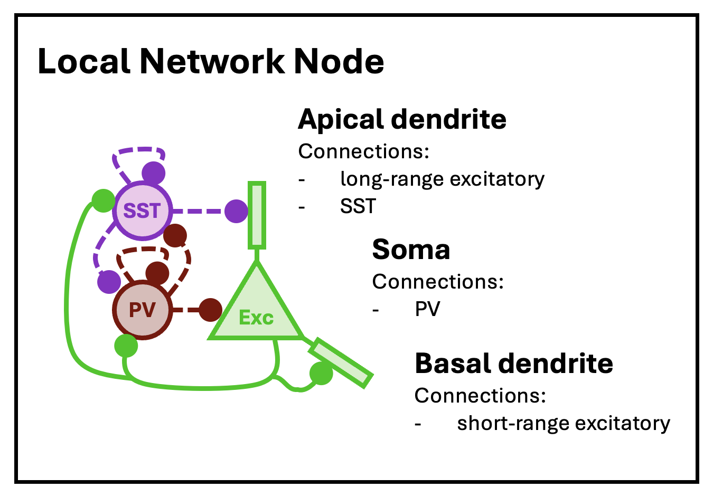
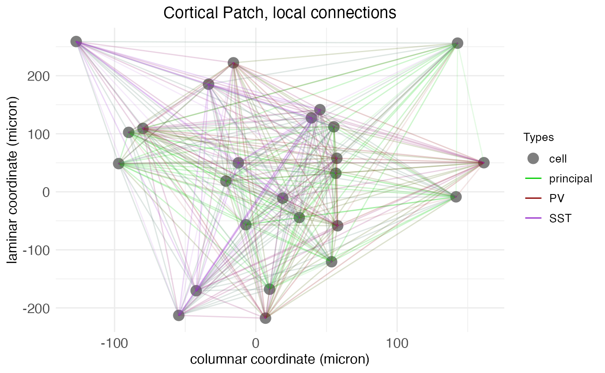
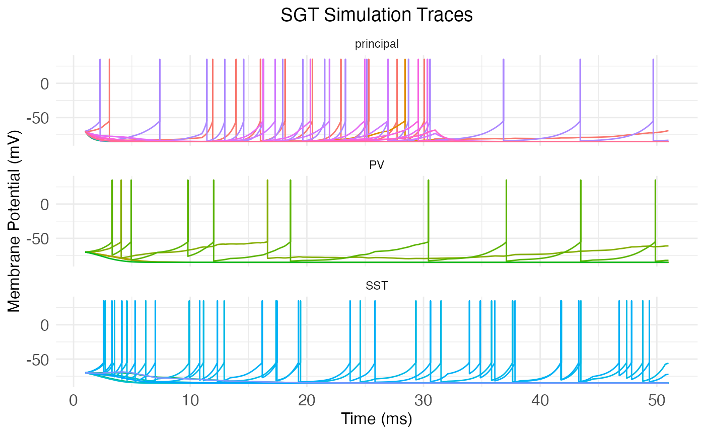
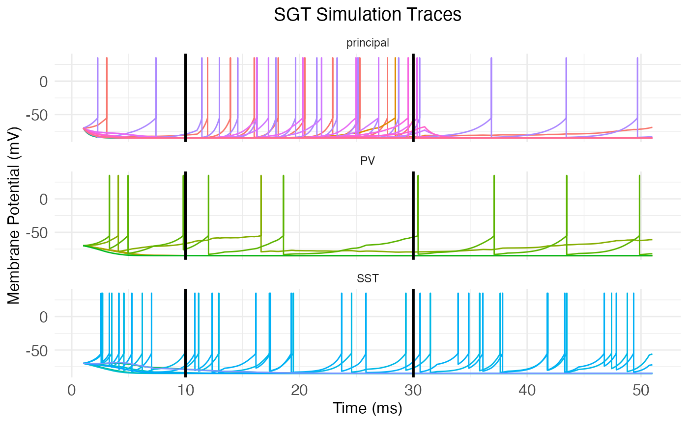

Spatial growth-transform models
Michael Barkasi
2026-03-27
tutorial_SGT.RmdIntroduction
The simplest mathematical models of neural networks are built from homogeneous McCulloch-Pitts neurons with scalar-weight connections between them. Biological neural networks, such as those in patches of cortex, are far more complex. They contain different types of neurons each with their own electrical behavior and spatially extended connections.
Computational neuroscientists standardly model biological neural networks as dynamical systems. Growth-transform (GT) models, introduced by Gangopadhyay and Chakrabartty, are one example. Instead of a one-dimensional weight between two homogeneous neurons, GT models use both a transconductance parameter and a temporal modulation factor to determine network behavior. Roughly, the transconductance parameter is the inverse of a traditional weight, while the temporal modulation factor allows for capturing the electrodynamics \partial v/\partial t of different neuron types at a single spatial point.
The GT models implemented in this package add a third aspect of biological realism not captured by the original formulation of Gangopadhyay and Chakrabartty: a transmission velocity parameter for each neuron type. While the temporal modulation factor controls membrane voltage over time at a single spatial point, the transmission velocity parameter determines the rate at which changes in membrane voltage propagate between neurons. For this reason, we refer to our GT models as spatial GT (SGT) models.
SGT models thus allow for network topologies that not only capture connection strengths between neurons, but also the different types of neurons and their electrodynamics across both time and space. A separate tutorial demonstrates how to build network topologies for these models from circuit motifs. This tutorial explains SGT models in more detail.
Network nodes
Let’s set up the R environment by clearing the workspace, setting a random-number generator seed, and loading the neurons package.
# Clear the R workspace to start fresh
rm(list = ls())
# Set seed for reproducibility
set.seed(12345)
# Load neurons package
library(neurons, quietly = TRUE) Next, we create a new network object with the new.network function.
cortical.patch <- new.network()The object initialized by new.network is a minimal single-node network. In this context, “node” does not mean a single neuron, but rather a cluster of nearby neurons with local recurrent connections. For this tutorial, we will follow the topology of the node model of Park and Geffen (2020), which includes three distinct neuron types: excitatory principal pyramidal neurons and two inhibitory types, parvalbumin (PV) and somatostatin (SST) interneurons. This topology specifies that these nodes are expected to be (approximately) fully connected, with cells of each type synapsing into cells of all other types. (Note that while we keep the topology and node structure of the Park and Geffen model, they use a different dynamical systems framework to model spiking behavior.)

The basic structure of a local network node, as modeled by Park and Geffen (2020).
At this low level of structure, nodes are defined by neuron types, neuron type valence (1 for excitatory, -1 for inhibitory), node size (mean number of neurons per type), and local connection density (the average fraction of neurons in the node that connect to other neurons in the same node). At the highest level of structure, network objects are built from nodes arrayed into layers and columns, mimicking the structure of the cortex – although in this tutorial we will only work with a single node. The network-topology tutorial provides more details on making layer-column structure.
With a network initialized, both low and high-level structure is set with the set.network.structure function. We will set up a fully connected single-node network with the three cell types from the Park and Geffen (2020) model, with a mean count of 10, 5, and 5, respectively.
cortical.patch <- set.network.structure(
cortical.patch,
neuron_types = c("principal", "PV", "SST"),
neurons_per_node = c(10, 5, 5),
recurrence_factors = 0.75,
pruning_threshold_factor = 0.1
)By default, the set.network.structure function sets the number of rows and columns each to one, i.e., makes a single node, and initializes local recurrent connections within that node. The argument recurrence_factors is used to set the local connection density; in this case, it’s set to 0.75, meaning each cell (in each layer-column combination) connects to approximately three-quarters of the cells of each type. The node we just created can be visualized with the plot.network function:
plot.network(cortical.patch, cell_size_factor = 1.0)
As the axis labels indicate, SGT models assign to each neuron a 2D spatial coordinate giving its location along the laminar and columnar axes. These coordinates are continuous and real-valued and are used in conjunction with the transmission velocity parameter to simulate spike propagation.
Spatial coordinates
As the axis labels in the previous plot also indicate, there is a physically meaningful unit attached to these distances: microns. Four parameters control the coordinates assigned to each neuron: column_width (c_{\mathrm{width}}), layer_height (l_{\mathrm{height}}), column_separation_factor (F_{\mathrm{column}}), and layer_separation_factor (F_{\mathrm{layer}}). A node is created for each combination of column integer-index c and layer integer-index l. Each node is assigned a coordinate \langle x_c,y_l\rangle: x_c = c \frac{c_{\mathrm{width}}F_{\mathrm{column}}}{2} y_l = l \frac{l_{\mathrm{height}}F_{\mathrm{layer}}}{2} Within each node, a coordinate \langle x_n,y_n\rangle is assigned to each neuron n by sampling from a normal distribution: x_n \sim \mathcal{N}(x_c, \frac{c_{\mathrm{width}}}{2}) y_n \sim \mathcal{N}(y_l, \frac{l_{\mathrm{height}}}{2})
Cell types
The three cell types (principal, PV, and SST) of the node are pre-defined in the neurons package. To see all cell types known by the package in the current session, we use the print.known.celltypes function:
## Known cell types:
##
## Type: VIP
## Valence: -1
## Temporal modulation bias: 0.001
## Temporal modulation time constant: 1
## Temporal modulation amplitude: 0.005
## Transmission velocity: 30000
## Potential bound (mV): 85
## Metabolic energy derivative dHdv bound (mA): 1.05e-06
## Spike current (mA): 1e-06
## Coupling scaling factor: 1e-07
## Spike potential (mV): 35
## Resting potential (mV): -70
## Threshold (mV): -55
##
## Type: SST
## Valence: -1
## Temporal modulation bias: 0.001
## Temporal modulation time constant: 1
## Temporal modulation amplitude: 0.005
## Transmission velocity: 24000
## Potential bound (mV): 85
## Metabolic energy derivative dHdv bound (mA): 1.05e-06
## Spike current (mA): 1e-06
## Coupling scaling factor: 1e-07
## Spike potential (mV): 35
## Resting potential (mV): -70
## Threshold (mV): -55
##
## Type: PV
## Valence: -1
## Temporal modulation bias: 0.001
## Temporal modulation time constant: 1
## Temporal modulation amplitude: 0.005
## Transmission velocity: 36000
## Potential bound (mV): 85
## Metabolic energy derivative dHdv bound (mA): 1.05e-06
## Spike current (mA): 1e-06
## Coupling scaling factor: 1e-07
## Spike potential (mV): 35
## Resting potential (mV): -70
## Threshold (mV): -55
##
## Type: principal
## Valence: 1
## Temporal modulation bias: 0.001
## Temporal modulation time constant: 1
## Temporal modulation amplitude: 0
## Transmission velocity: 30000
## Potential bound (mV): 85
## Metabolic energy derivative dHdv bound (mA): 1.05e-06
## Spike current (mA): 1e-06
## Coupling scaling factor: 1e-07
## Spike potential (mV): 35
## Resting potential (mV): -70
## Threshold (mV): -55As can be seen from the output, cell types are defined by a number of parameters:
- Valence: 1 for excitatory cells, -1 for inhibitory cells. Code variable: valence.
-
Temporal modulation parameters: The temporal modulation
term T controlling the responsiveness
(size) of \partial v/\partial t is
determined by an exponential decay function with parameters:
- Temporal modulation bias: The baseline value b of T, in ms. Code variable: temporal_modulation_bias.
- Temporal modulation time constant: The time constant \tau of the exponential decay in T, in ms. Code variable: temporal_modulation_timeconstant.
- Temporal modulation amplitude: The amplitude A of the exponential decay in T, in ms. Code variable: temporal_modulation_amplitude.
- Transmission velocity: The speed of the action potential between neurons, in microns/ms. Code variable: transmission_velocity.
- Potential bound: The maximum absolute value v_\mathrm{bound} of potential difference in electrical charge between the inside and outside of the cell, in mV. Code variable v_bound. Theoretically, we assume this is the absolute value of the rest voltage, plus a little bit. All that really matters is that -v_\mathrm{bound} \leq v \leq v_\mathrm{bound} for all possible membrane potentials v.
- Metabolic energy derivative bound: Bound \partial I_\mathrm{influx} on the absolute value of the derivative \partial\mathcal{H}/\partial v of metabolic energy \mathcal{H} with respect to potential v, such that \partial I_\mathrm{influx} \geq |\partial\mathcal{H}/\partial v|, in mA. Code variable: dHdv_bound. Theoretically, we assume that this value is the change in current required to initiate a spike.
- Spike current: The current of the action potential, i.e., the current crossing the membrane at a spot as a spike passes, in mA. Code variable: I_spike.
- Coupling scaling factor A unit-free scalar value controlling how power used in synaptic transmission compares to that used in spiking. Code variable: coupling_scaling_factor.
- Spike potential: The value v_\mathrm{spike} of an action potential, in mV. Code variable: spike_potential.
- Resting potential: The potential difference v_\mathrm{rest} in electrical charge between the inside and outside of the cell at rest, in mV. Code variable: resting_potential.
- Threshold: The potential difference v_\mathrm{threshold} in electrical charge between the inside and outside of the cell at which an action potential is triggered, in mV. Code variable: threshold.
Notice that these are mostly biophysically interpretable parameters which can be set with, or tested against, experimental data.
Cell types themselves are technically a C++ struc. Defined cell types are stored in an unordered map in C++ that’s accessible via three R wrapper functions. The function add.cell.type can be used to add a new cell type to the map. The function modify.cell.type can be used to modify an existing cell type. The function fetch.cell.type.params will return the parameters of the named cell type as an R list.
SGT simulations
The function run.SGT runs a simulation of spiking activity across a network using a SGT model. The function is just a wrapper over the SGT method of C++ network objects. It takes three arguments:
- network: A network created by the new.network function and structured by the set.network.structure function.
- stimulus_current_matrix: A matrix of input currents (in mA) over the duration of the simulation, rows representing neurons and columns representing time bins.
- dt: Time-step size for simulation, in ms. Default is 1\mathrm{e}-3.
The number of columns of stimulus_current_matrix determines the length of the simulation. In essence, the function run.SGT answers the question: How would the network respond to this stimulus current over this amount of time?
For example, let’s create a 50ms simulation for the node we created above. To fashion a stimulus current matrix, we first need to figure out how many neurons are in our single-node network:
cortical.patch.comps <- cortical.patch$fetch_network_components()
n_neurons <- cortical.patch.comps$n_neurons
cat("Number of neurons in the network:", n_neurons)## Number of neurons in the network: 25This gives us the number of rows needed in our stimulus current matrix. For the number of columns, we need to know the number of time steps required:
stim_time_ms <- 50
dt <- 1e-3
n_steps <- stim_time_ms/dt
cat("Number of time steps in the simulation:", n_steps)## Number of time steps in the simulation: 50000Now, suppose we want our simulation to involve a 20ms input current to just the principal neurons, starting at 10ms. We can compute the initial and final time steps of this current, plus a mask for the principal neurons, as follows:
# Set stimulus start and length
stim_length_ms <- 20
stim_start_ms <- 10
# Find start and end steps of the input stimulus current
stim_length <- stim_length_ms / dt
stim_start <- stim_start_ms / dt
stim_end <- stim_start + stim_length - 1
# Find mask for principal neurons
principal_mask <- cortical.patch.comps$neuron_type_name == "principal"A final question is how much current to apply. For this simulation, we’ll use a constant current of one pico amp (1\mathrm{e}-9mA) to the principal neurons during the stimulus period. It might be natural to leave the input current at zero outside of the stimulus period, but there is endogenous background activity even without exogenous input to the network. So, we’ll specify a baseline input current of 0.1 pico amps (1\mathrm{e}-10mA) to all neurons throughout the entire stimulation period:
rest_current <- 1e-10 # 0.1 pico amp
stimulus_current_matrix <- matrix(rest_current, nrow = n_neurons, ncol = n_steps)
stimulus_current_matrix[principal_mask, stim_start:stim_end] <- 1e-9 # one pico ampWith the stimulus current matrix in hand, we can run the simulation:
sim_results <- run.SGT(
cortical.patch,
stimulus_current_matrix,
dt
)The result of the function run.SGT is a matrix of spike traces formatted similar to stimulus_current_matrix: each row represents a neuron and each column represents a time step from the simulation. Each entry is the membrane potential of the neuron at that time bin, in mV. The order of neurons and time steps matches across the input stimulus-current and output spike-trace matrices, of course. In addition, a vector of spike counts for each neuron (giving the number of times each neuron spiked) in the network is also returned. Both are returned in a list of two elements, sim_traces and spike_counts.
We can view the head of the simulation traces:
print(sim_results$sim_traces[1:10,1:10])## [,1] [,2] [,3] [,4] [,5] [,6] [,7] [,8] [,9] [,10]
## [1,] -70 -70.00141 -70.00281 -70.00421 -70.00560 -70.00699 -70.00837 -70.00974 -70.01109 -70.01243
## [2,] -70 -70.02832 -70.05659 -70.08481 -70.11298 -70.14109 -70.16916 -70.19717 -70.22512 -70.25302
## [3,] -70 -69.99523 -69.99046 -69.98569 -69.98092 -69.97614 -69.97137 -69.96659 -69.96181 -69.95703
## [4,] -70 -70.00984 -70.01967 -70.02950 -70.03931 -70.04912 -70.05890 -70.06867 -70.07842 -70.08815
## [5,] -70 -70.00973 -70.01945 -70.02917 -70.03888 -70.04858 -70.05828 -70.06797 -70.07764 -70.08730
## [6,] -70 -70.01363 -70.02725 -70.04086 -70.05446 -70.06803 -70.08159 -70.09512 -70.10863 -70.12211
## [7,] -70 -70.01555 -70.03108 -70.04660 -70.06210 -70.07758 -70.09305 -70.10849 -70.12391 -70.13930
## [8,] -70 -70.02320 -70.04638 -70.06951 -70.09261 -70.11568 -70.13871 -70.16169 -70.18464 -70.20755
## [9,] -70 -70.02031 -70.04059 -70.06084 -70.08108 -70.10128 -70.12146 -70.14160 -70.16172 -70.18181
## [10,] -70 -70.02921 -70.05836 -70.08747 -70.11652 -70.14552 -70.17447 -70.20336 -70.23220 -70.26099As well as the head of the spike counts:
## [1] 10 0 17 3 4 1The neurons package also includes the function plot.network.traces, which takes a network object with a trace matrix and produces a plot of the traces, putting all neurons of the same type together.
plot.network.traces(cortical.patch)
We can manually add the start and end of the stimulus period to the plot with vertical lines:
plt <- plot.network.traces(cortical.patch, return_plot = TRUE) +
ggplot2::geom_vline(xintercept = stim_end * dt, linewidth = 1) +
ggplot2::geom_vline(xintercept = stim_start * dt, linewidth = 1)
print(plt)
Notice how there’s spontaneous spiking throughout the simulation time, not just during the stimulus period. This is both because of the rest current being injected into all cells, and because of recurrent connections between the cells. Also note that the cells are not all firing synchronously. This is both because of the stochastic connections and connection weights between cells, but also (and more importantly, for a network this small) because of the temporal delay from spatial distance between neurons. Finally, notice the different spiking behaviors. The principal neurons largly fire in a tonic, i.e., rhythmic manner, while the inhibitory interneurons (the PV and SST) fire in bursts. This difference is directly due to the difference in temporal modulation amplitude: An amplitude of zero leads to no bursting, while positive non-zero amplitude creates a bursting pattern.
Mathematics of SGT models
GT models are hybrids, in so far as they directly model subthreshold membrane potential dynamics, while leaving out any mechanistic modeling of spikes themselves. Instead, spikes are modeled as a constant and instantaneous value v_\mathrm{spike} (variable spike_potential in the simulation) added to the subthreshold dynamics when the spike threshold is crossed. Thus, what follows is an explanation of the subthreshold component of membrane potential v, although we leave the qualifier “subthreshold” implicit.
Suppose our network has n neurons N. We want to run a simulation of the membrane potential v(t) of each neuron N over time t. Naturally, the system evolves so that: v(t+1) = v(t) + \left.\frac{\partial v}{\partial t}\right|_{t+1} The hard part, of course, is to compute \partial v/\partial t. That is, how do membrane potentials evolve over time?
Power minimization
GT models tackle this question with a minimization principle: \partial v/\partial t is always such that the system minimizes net (metabolic) power \mathcal{H}: \frac{\partial\mathcal{H}}{\partial v}\frac{\partial v}{\partial t} \leq 0 For simplicity, let us assume that \partial\mathcal{H}/\partial t = 0, i.e., that the metabolic power is not changing over time.
It’s plausible that the membrane potential v is a scalar multiple fv_\mathrm{rest} of the resting potential v_\mathrm{rest}, where the scale factor f is a function of \partial\mathcal{H}/\partial v. In other words, we assume that the scale factor f depends on how a small change \partial v in membrane potential would change the metabolic power \mathcal{H}. Hence, we have that: v(t+1) = v(t) + \left.\frac{\partial v}{\partial t}\right|_{t+1} = f\left(\left.\frac{\partial\mathcal{H}}{\partial v}\right|_{t+1}\right)v_\mathrm{rest} Actually, in practice Gangopadhyay and Chakrabartty assume that the quantity of which v is a multiple is a positive value v_\mathrm{bound}. The only constraint on this value is that it must bound v from above and below, i.e., -v_\mathrm{bound} \leq v \leq v_\mathrm{bound}. Thus, it would be more mathematically accurate to say that v is a scalar multiple of the absolute value of v_\mathrm{rest}. Within the simulation code, the relevant variable is v_bound with a default value of 85 mV, slightly higher than the absolute value of v_\mathrm{rest}.
Scale factor
Therefore, if we could find a suitable scale factor f, we’d be able to compute \partial v/\partial t as: \left.\frac{\partial v}{\partial t}\right|_t = f\left(\left.\frac{\partial\mathcal{H}}{\partial v}\right|_{t}\right)v_\mathrm{rest} - v(t-1) Combining the previous equation with the minimization assumption, we have: \frac{\partial\mathcal{H}}{\partial v} \left(f\left(\left.\frac{\partial\mathcal{H}}{\partial v}\right|_t\right)v_\mathrm{rest} - v(t-1) \right) = 0 Assuming \partial\mathcal{H}/\partial v \neq 0, this equation implies that: v(t-1) = f\left(\left.\frac{\partial\mathcal{H}}{\partial v}\right|_t\right)v_\mathrm{rest} And so: f\left(\left.\frac{\partial\mathcal{H}}{\partial v}\right|_t\right) = \frac{v(t-1)}{v_\mathrm{rest}} Hence, we see that f is a function of the metabolic power gradient \partial\mathcal{H}/\partial v that’s equal to the ratio of v over the rest potential v_\mathrm{rest}. An immediate consequence is that, when v\approx v_\mathrm{rest}, the scale factor f is approximately 1.
Notice that this derivation implies that \partial v/\partial t=0, which may seem obviously wrong. However, we are attempting to derive a formula for \partial v/\partial t which makes \partial\mathcal{H}/\partial t=0. The “makes” is aspirational: of course, \partial v/\partial t\neq 0, but, what general form of \partial v/\partial t will tend to make \partial\mathcal{H}/\partial t=0 over time? In terms of biology, we can alternatively think of the system as trying to maintain a stable rest voltage v_\mathrm{rest}, and the question is: what form of \partial v/\partial t will best achieve this goal?
Rest vs spike power
In order to solve for f, it’s helpful to think about the metabolic power gradient \partial\mathcal{H}/\partial v and how it relates to two quantities: the metabolic power \mathcal{H}_\mathrm{rest} of maintaining rest potential v_\mathrm{rest} and the metabolic power \mathcal{H}_\mathrm{spike} of initiating a spike under the conditions which hold at time t. At least as a linear approximation, we have that: \mathcal{H}_\mathrm{rest} = v_\mathrm{rest}\left.\frac{\partial\mathcal{H}}{\partial v}\right|_t This equation is justified because the metabolic power \mathcal{H}_\mathrm{rest} of maintaining rest potential v_\mathrm{rest} is equal to the power used to maintain the negative potential v_\mathrm{rest} under the natural positive flow of charge into the cell. Unit analysis (\mathrm{Watts} = \mathrm{Volts} \times \mathrm{Ampere}) implies that this latter quantity must be the energy gradient \partial\mathcal{H}/\partial v evaluated at t.
What about the metabolic power \mathcal{H}_\mathrm{spike} of initiating a spike? If v_\mathrm{threshold} is the membrane potential at spike threshold, then (by the above unit analysis) the change \partial I_\mathrm{influx} in current I across the membrane at spike initiation is: \partial I_\mathrm{influx} = \left.\frac{\partial\mathcal{H}}{\partial v}\right|_{v_\mathrm{threshold}} and the metabolic power required to produce a spike is approximately: \mathcal{H}_\mathrm{spike} = v\partial I_\mathrm{influx}
The values \mathcal{H}_\mathrm{rest} and \mathcal{H}_\mathrm{spike} are helpful because, at any moment t, whether there is a spike depends on how they relate. If \mathcal{H}_\mathrm{spike} < \mathcal{H}_\mathrm{rest}, then the neuron will be more inclined to spike. Under this assumption, we can suppose that f is a function of the difference between \mathcal{H}_\mathrm{spike} and \mathcal{H}_\mathrm{rest}: \begin{aligned} f\left(\left.\frac{\partial\mathcal{H}}{\partial v}\right|_t\right) &= f\left(\mathcal{H}_\mathrm{spike} - \mathcal{H}_\mathrm{rest}\right) \\ &= f\left(v\partial I_\mathrm{influx} - v_\mathrm{rest}\left.\frac{\partial\mathcal{H}}{\partial v}\right|_t\right) \end{aligned} A suitable function f follows from the previously cited lemma that f\approx 1 when v\approx v_\mathrm{rest}. A plausible way to achieve this result without f collapsing into a trivial constant is to set: f = \frac{ v\partial I_\mathrm{influx} - v_\mathrm{rest}\left.\frac{\partial\mathcal{H}}{\partial v}\right|_t }{ v_\mathrm{rest}\partial I_\mathrm{influx} - v\left.\frac{\partial\mathcal{H}}{\partial v}\right|_t }
Interpretation
While the motivation for this definition of f is mathematical (we want f\approx 1 when v\approx v_\mathrm{rest}), the equation makes some biological sense. We have already discussed the numerator: v_\mathrm{rest}\left.\partial\mathcal{H}/\partial v\right|_t is the metabolic power \mathcal{H}_\mathrm{rest} of maintaining rest potential v_\mathrm{rest} under current influx at time t, v\partial I_\mathrm{influx} is the metabolic power \mathcal{H}_\mathrm{spike} of initiating a spike under that same condition, and their difference signals whether it takes more metabolic power to spike or maintain rest.
In the denominator, v_\mathrm{rest}\partial I_\mathrm{influx} is the metabolic power of initiating a spike from the rest potential, while v\left.\partial\mathcal{H}/\partial v\right|_t is the metabolic power of maintaining the potential v(t) under the current influx \left.\partial\mathcal{H}/\partial v\right|_t holding at time t. Hence, the difference between these two quantities is the amount of additional metabolic power needed to (hypothetically) initiate a spike from rest, compared to the power needed to maintain the cell’s present state.
Thus, the denominator provides a kind of upper bound, or normalization. The scale factor f is plausibly interpreted as the additional power needed to spike (vs maintain rest potential) as a fraction of the max possible power needed to initiate a spike. It gives a normalized “cost” of the power (and hence energy) for a spike.
Power gradient
Returning to \partial v/\partial t, we have: \left.\frac{\partial v}{\partial t}\right|_t = v_\mathrm{rest} \left( \frac{ v\partial I_\mathrm{influx} - v_\mathrm{rest}\left.\frac{\partial\mathcal{H}}{\partial v}\right|_t }{ v_\mathrm{rest}\partial I_\mathrm{influx} - v\left.\frac{\partial\mathcal{H}}{\partial v}\right|_t }\right) - v(t-1) This is equation given by Gangopadhyay and Chakrabartty for GT models. It ensures the minimization condition that \partial\mathcal{H}/\partial t = 0.
How do we determine \partial I_\mathrm{influx}? Well, \partial I_\mathrm{influx} is the change in current I across the membrane at spike initiation. Following Gangopadhyay and Chakrabartty, we will treat it as a constant empirical parameter that bounds the power gradient, i.e., \partial I_\mathrm{influx} \geq \left.\partial\mathcal{H}/\partial v\right|_t for all t. This treatment is plausible, as presumably the moment of spike initiation involves the largest change in membrane current a neuron will experience.
Second, how do we determine \partial\mathcal{H}/\partial v? Intuitively (and, as before, following Gangopadhyay and Chakrabartty), we have: \frac{\partial\mathcal{H}}{\partial v} = I_\mathrm{synaptic\;transmission} - I_\mathrm{stimulus\;input} + I_\mathrm{spike} In this equation, I_\mathrm{synaptic\;transmission} is the input current induced by synaptic transmission across all synapses, I_\mathrm{stimulus\;input} gives the input current to each neuron from outside stimuli, and I_\mathrm{spike} gives the spike current (if any). The stimulus input I_\mathrm{stimulus\;input} is what’s specified by the simulation variable stimulus_current_matrix. The spike current I_\mathrm{spike} is determined by simple thresholding: I_\mathrm{spike}=0 if v < v_\mathrm{threshold} and otherwise is equal to the value of the simulation variable I_spike for the cell type.
Membrane potential reset
Notice that unlike a leaky integrate-and-fire neuron, the definition of \partial v/\partial t itself produces the reset after a spike. When v is very near the threshold v_\mathrm{threshold}, then (by the definition given above) we have that \partial I_\mathrm{influx} = \left.\partial\mathcal{H}/\partial v \right|_{v_\mathrm{threshold}}, and hence f\approx -1 (because, in general, (x-y)/(y-x)=-1). Thus, when v\approx v_\mathrm{threshold}, \partial v/\partial t\approx -v_\mathrm{rest} - v_\mathrm{threshold}. Hence, v_\mathrm{threshold} + \partial v/\partial t \approx -v_\mathrm{rest}. However, recall that the actual math for the model uses v_\mathrm{bound}=|v_\mathrm{rest}| + \epsilon for some small \epsilon, so that v_\mathrm{threshold} + \partial v/\partial t \approx -v_\mathrm{bound} \approx v_\mathrm{rest}. Thus, the model produces a reset to a value near the rest potential after a spike, without any explicit reset mechanism.
Spatial lag
What about I_\mathrm{synaptic\;transmission}, the input current induced by synaptic transmission across all synapses? We assume that the induced post-synaptic current is equal to the inducing pre-synaptic potential, modulated by the synaptic conduction. However, the complicating factor is that, given spatial distance between cells and synaptic transmission time, the relevant pre-synaptic potential v at time t from pre-synaptic neuron N may not be v(t), but rather v(t^\prime) for some t^\prime < t.
Let \vec{v} = \langle v_1, v_2, \ldots, v_n\rangle be the vector of membrane potentials for all n neurons in the network at time t. Further, let V be a n\times n time-dependent matrix which captures how each neuron “sees” the others. Specifically, V_{ij}(t) is the membrane potential of neuron N_i that reaches neuron N_j at time t. Then, assuming Q is an n\times n matrix of synaptic connections such that Q_{ij} is the conductance from neuron j to neuron i, we have that: I_\mathrm{synaptic\;transmission}(N_i) = \sum_{j=1}^n Q_{ij}V_{ji}(t)
Spiking without spikes?
As noted above, GT models are only ever modelling subthreshold dynamics. That is, v represents only the membrane potential below the spike threshold. This arrangement leads to an awkward interpretation of the equation just given for I_\mathrm{synaptic\;transmission}. Specifically, this equation implies that it’s the subthreshold membrane potential of the presynaptic neuron which is transduced across the synapse to the postsynaptic neuron. Biologically, signal transduction at synapses happens primarily through spikes, of course. So, two questions naturally arise:
- If it’s the subthreshold membrane potential v which drives synaptic transmission in a GT model, how do the spikes themselves have any causal role in signal transmission?
- Whatever the answer to the first question, why arrange a spiking neural network model in this strange way?
The answer to the first question is that, in GT models, spikes of pre-synaptic neurons causally affect the membrane potential of postsynaptic neurons indirectly, via their effect on the subthreshold membrane potential of the pre-synaptic neuron. This is, of course, the inverse of the causal flow in the real biology. In real neurons, changes in subthreshold membrane potential cause spikes, which cause synaptic transmission. In GT models, the energy cost of a future spike causes changes in the subthreshold membrane potential, which itself is engaged in continuous synaptic transmission. Mathematically, that future energy cost appears as the term I_\mathrm{spike} in the metabolic power gradient \partial\mathcal{H}/\partial v, and as the term \mathcal{H}_\mathrm{spike} in the scale factor f.
As for the second question, the advantage of flipping the causal order and modelling the energy cost of a spike instead of a spike itself is that it makes it easier to optimize the synaptic “weights”, i.e., the matrix Q of synaptic conductances, so that the network model reproduces a desired response v for a given stimulus input current I_\mathrm{stimulus\;input}. Traditionally spiking neural networks are trained by optimizing synaptic weights to minimize the difference between some time-dependent desired spike rate and the model spike rate. However, if R(w,t,n) is the spike rate implied by a spiking neural network for neuron n at time t under synaptic weights w, R will not usually be differentiable due to spiking being a function of discrete threshold crossings. This means that spiking neural networks can’t straightforwardly be trained using gradient descent. In contrast, \mathcal{H} is a continuous function of v with a well defined derivative \partial\mathcal{H}/\partial v, and v itself, being only the subthreshold membrane potential, is also smooth.
Temporal modulation
The final step in GT models (including SGT models) is to divide the rate of change for membrane potential \partial v/\partial t by a temporal modulation term T, such that: v(t+1) = v(t) + \frac{\left.\frac{\partial v}{\partial t}\right|_{t+1}}{T} This term T is given by the following exponential decay model: T = b + A\exp\left(-\frac{x}{\tau}\right) where b is the temporal modulation bias, A is the temporal modulation amplitude, and \tau is the temporal modulation time constant. The traditional input x is filled by B, a “burst” step counter. The step counter B is merely a numerical device in the simulation to carry T repeatedly across the exponential decay via the input x. When T<b, B resets to zero (and thus T jumps again to a high number), resetting the exponential decay.
When the amplitude A is zero, the exponential decay has no effect and all that’s relevant is the bias b. When A>0, the effect is to increase T at the start of the step counter, thereby shrinking the effect of \partial v/\partial t. This shrinkage follows the exponential decay of T, so that there is little chance in v (i.e., small \partial v/\partial t) at the start of the step counter, but the possibility for large changes in v at the end of the step counter. Thus, when at the end of the step counter, neurons are prone to many spikes as their membrane potential rapidly changes, creating a bursting effect.